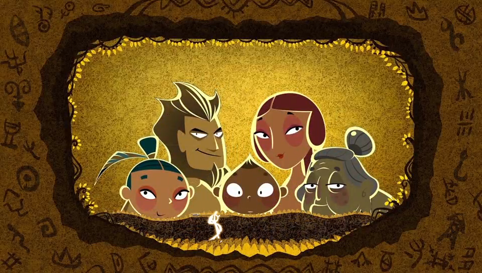
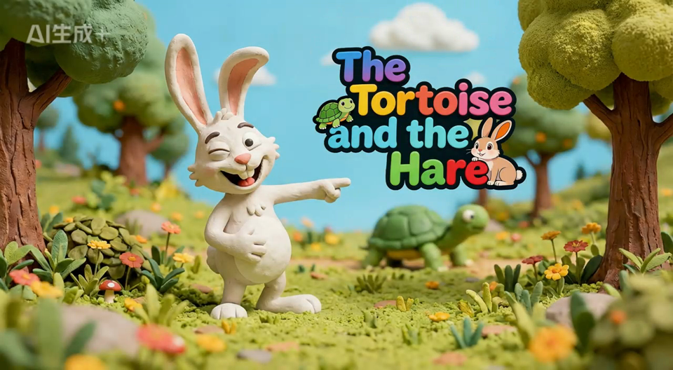
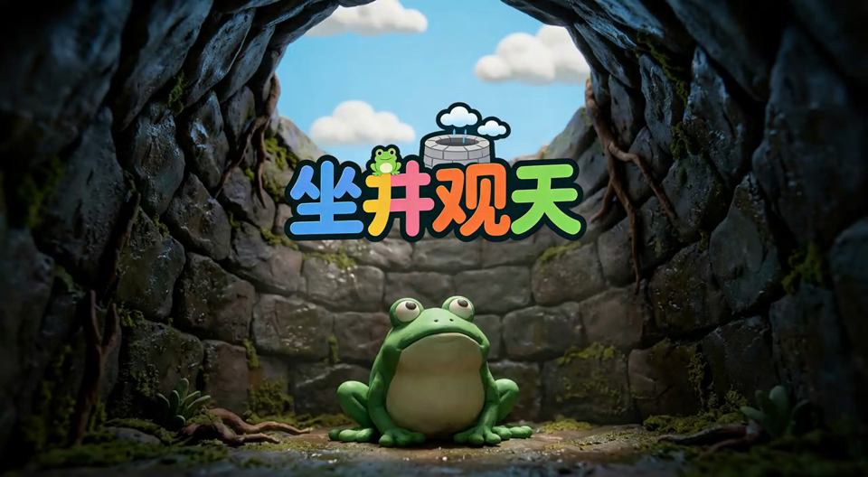
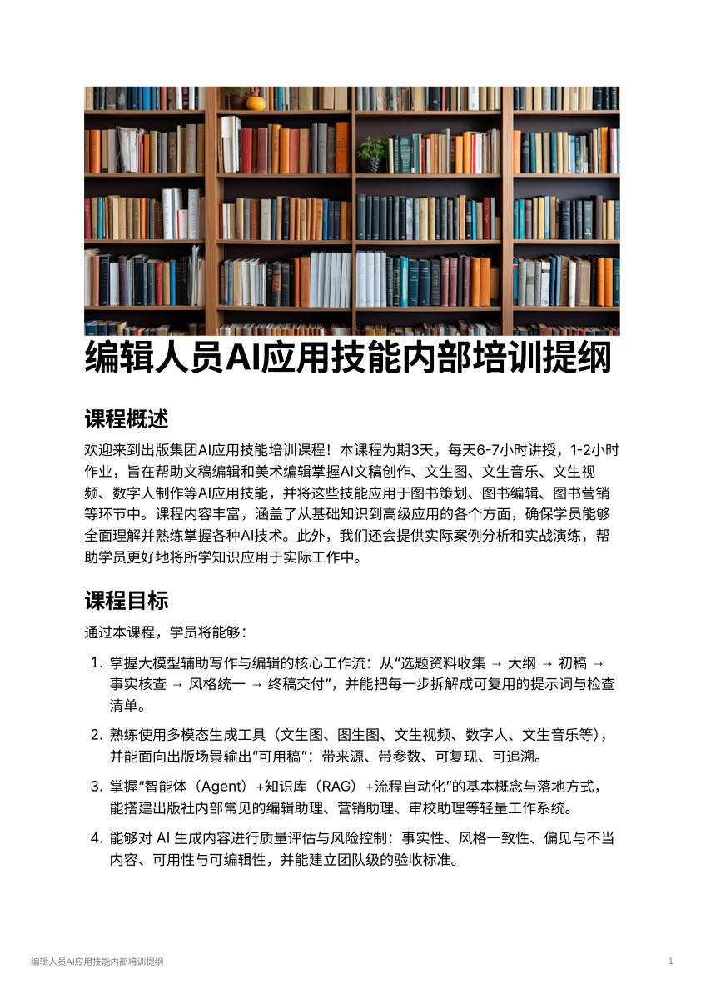

COVER
01 / 09
走向未来教学短视频 AI 全栈解决方案：90天｜1000+个视频｜1个AI平台｜1个AI团队
围绕业务交付与后续能力建设，提供一套可执行的 AI 教学内容生产方案
PROJECT GOALS
02 / 09
项目目标与总体建议
项目判断标准可以概括为两点：既要按节点交付，也要把后续生产能力留在内部
让内容生产能力真正进入 AI 时代
如果这次只解决短期交付，后续扩量、返修和新增内容，仍然会继续依赖外部。
在当前时间窗口下，更稳妥的做法不是只解决交付，而是把交付、平台沉淀和团队接手一起安排。
01
1000+ 个教学短视频交付
围绕 9 月节点，先确保业务侧有稳定可用的成果。
02
1 个 AI 视频生产平台
把脚本、分镜、素材、审核和版本控制沉淀成统一流程。
03
1 个 AI 赋能的团队
让教研团队后续能接手生产、复核和持续迭代。
PATH COMPARISON
03 / 09
路径对比
三条路径都可以启动，但在 90 天窗口下，成本、风险和后续控制力差异明显
如果只看能不能开始做，三条路径都成立；如果把时间、风险和后续维护一起算进去，差别就会比较清楚。
内部摸索
- 可以基于通用 AI 工具先启动，适合用于样片验证和小规模试做。
- 真正难点不在于单条产出，而在于效率、良率和一致性，学习成本和试错成本都较高。
- 如果缺少工程化经验，质量、进度和成本的波动会比较大。
传统外包
- 前期启动通常较顺，较容易先看到样片或阶段性成品。
- 预算通常更偏项目制，随着交付规格提高，整体投入也会继续上升。
- 主要交付结果是成品内容，后续扩量、修改和维护仍依赖外部团队。
全栈解决方案
- 把阶段交付、平台沉淀和团队接手放在同一项目里安排。
- 当前交付和后续迭代能力可以同步留在内部。
- 更适合这次既看节点交付、也看后续控制力的目标。
TEAM
04 / 09
北京智理科技有限公司核心成员
成员背景涵盖教育内容、技术平台与项目实施
这一页主要说明参与本次方案判断和交付设计的人员背景。
创始人
武宁
清华软件学院毕业，前好未来励步英语 IT 负责人，前东方剑桥教育集团 CTO，中国教育技术协会 AI 专家。
核心成员
黄炜
前新东方多纳英语产研总监，长期负责少儿英语产品与内容生产体系建设。
核心成员
颜久菁
豆神大语文产品总监，熟悉内容产品设计、课程表达与教学产品化。
这些背景信息主要用于说明，本次建议并不是单一技术视角，而是结合内容、产品和实施经验形成的。
CASE PROOF
05 / 09
案例视频
以下案例主要用于说明当前已经验证过的样本和产线能力



MODULE 1
06 / 09
模块一：1000+ 个视频如何稳定交付
难点不是做出样片，而是在 1000+ 个规模下保持稳定性、一致性和教学适配性
样片能不能做出来，不是这次项目真正的难点。
真正的难点是当目标变成 1000+ 个视频时，批量生产情况下能不能保持角色一致、风格一致、节奏一致，并且始终贴合现有教学体系。
相比个别出彩的视频，更重要的是把原本高度依赖人工协作的流程，压缩成可控的标准化流程。
课程内容
视频脚本
分镜设计
视频输出
审核验收
01
生产链路可控
课程内容-视频脚本-分镜设计-视频输出-审核验收必须形成统一工程链路。
02
AI 与人工协同
AI 和人工结合的过程控制要能支撑 1000+ 个规模下的批量生产稳定性。
03
风格和角色一致
角色、风格、节奏需要长期稳定，不能在规模上来后明显漂移。
04
教学体系适配
输出必须贴合现有课程体系，而不是只追求画面层面的“像样”。
ENABLEMENT
07 / 09
平台与团队赋能
平台侧负责流程控制与资产沉淀，团队侧负责后续接手和持续维护
1000+ 个视频的交付，不适合依赖零散工具和人工协作拼接完成；脚本、分镜、素材调用、批量生成、审核验收和版本管理，需要进入同一条可控链路。
平台真正要沉淀下来的，不只是生产动作本身，还包括人物一致性、品牌视觉风格、常用提示词模板和 AI 辅助质检这些可复用能力。

编辑人员AI应用技能内部培训提纲
平台可以沉淀方法，但后续能不能长期运转，仍然取决于教研团队是否具备基本的 AI 协同生产能力。
- 过去给出版社编辑做的 AIGC 培训提纲。
- 培训主题覆盖文生图、图生图、图生视频、Agent 等关键能力。
01
任务流编排
课程内容到视频输出的统一流程，减少人工断点和重复沟通。
02
批量生成控制
多视频并行生产、队列管理与进度追踪，让大批量任务在同一系统里被稳定管理。
03
风格资产沉淀
把人物一致性、品牌视觉风格和常用提示词模板固定下来，保证输出长期稳定。
04
AI 辅助质检
对画面、文案和镜头一致性做 AI + 人工复核，形成可追踪的返修闭环。
平台侧解决流程稳定性，团队侧解决后续接手和持续使用。
DECISION
08 / 09
投入产出判断
三条路径都能启动，但从确定性、成本结构和后续控制力看，结论并不相同
基于通用AI工具内部摸索
- 90 天内需要同时补齐工具、流程、审核和生产稳定性，落地压力较大。
- 隐性成本主要来自组织学习、反复试错和返工管理。
- 主要不确定性在质量稳定性、交付节奏和成本波动。
传统外包
- 已有合作经验时，交付方式相对可预期。
- 更适合把需求按阶段外采，但能力沉淀仍在外部。
- 项目结束后主要留下成品文件，内部能力提升有限。
全栈解决方案
- 90 天内同步完成交付、平台和团队能力建设。
- 投入对应的不只是当期内容生产，也包括后续复用的流程和系统能力。
- 项目结束后，视频成果、平台能力和团队方法可以同时留在内部。
判断结论
如果只看启动难度，三条路径都能开始；如果把节点交付、后续维护和能力沉淀一起看，全栈方案相对更均衡。
PLAN
09 / 09
项目交付总结
把交付标的、价格结构、90 天安排和客户价值放在一起看，项目边界会更清楚
60 万
视频交付
交付 1000 个教学短视频成品，按确认后的样片标准分批生产、分批验收。
价值是先解决业务节点交付，直接形成可使用的内容成果。
30 万
平台交付
交付 1 套可上线的视频生产平台，覆盖故事、脚本、keyframe 图片、clip 到成片视频的全流程。
价值是把批量生成、审核、版本管理和导出能力沉淀到内部。
培训赋能
交付 1 套教研团队培训赋能计划，按团队能力安排 4～8 次课，并同步 SOP、操作手册和示范案例。
该部分纳入项目实施配套支持，不单独计费。
总价、总交付与客户价值
项目总价 90 万，最终交付给客户的是 1000 个视频、1 套可上线的视频生产平台，以及 1 套教研团队培训赋能方案。
客户拿到的不只是阶段成品，也包括后续继续生产所需的平台能力、SOP、模板、参考样例和团队使用能力。
90天执行安排
第 1 月：完成样片标准确认，跑通生产路径和审核闭环，首批 200 个视频交付。
第 2 月：进入稳定批量生产阶段，累计完成 650 个视频交付。
第 3 月：完成剩余内容与返修，平台正式上线，累计完成 1000 个视频交付，并完成团队实操交接。